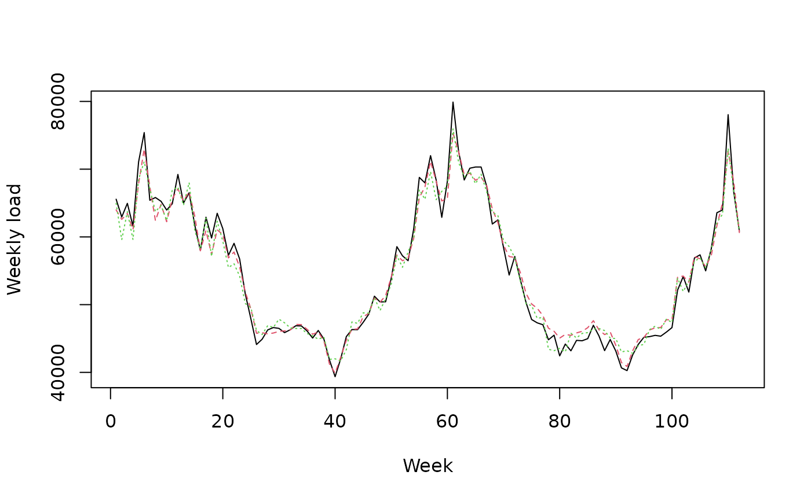

The package opera performs, for regression-oriented time-series,
predictions by combining a finite set of forecasts provided by the user.
More formally, it considers a sequence of observations Y (such as
electricity consumption, or any bounded time series) to be predicted step
by step. At each time instance t, a finite set of experts
(basicly some based forecasters) provide predictions x of the next
observation in y. This package proposes several adaptive and robust
methods to combine the expert forecasts based on their past performance.
Prediction, Learning, and Games. N. Cesa-Bianchi and G. Lugosi.
Forecasting the electricity consumption by aggregating specialized experts;
a review of sequential aggregation of specialized experts, with an
application to Slovakian an French contry-wide one-day-ahead (half-)hourly
predictions, Machine Learning, in press, 2012. Marie Devaine, Pierre
Gaillard, Yannig Goude, and Gilles Stoltz
Contributions to online robust aggregation: work on the approximation error and on
probabilistic forecasting. Pierre Gaillard. PhD Thesis, University Paris-Sud, 2015.
library('opera') # load the package
set.seed(1)
# Example: find the best one week ahead forecasting strategy (weekly data)
# packages
library(mgcv)
# import data
data(electric_load)
idx_data_test <- 620:nrow(electric_load)
data_train <- electric_load[-idx_data_test, ]
data_test <- electric_load[idx_data_test, ]
# Build the expert forecasts
# ##########################
# 1) A generalized additive model
gam.fit <- gam(Load ~ s(IPI) + s(Temp) + s(Time, k=3) +
s(Load1) + as.factor(NumWeek), data = data_train)
gam.forecast <- predict(gam.fit, newdata = data_test)
# 2) An online autoregressive model on the residuals of a medium term model
# Medium term model to remove trend and seasonality (using generalized additive model)
detrend.fit <- gam(Load ~ s(Time,k=3) + s(NumWeek) + s(Temp) + s(IPI), data = data_train)
electric_load$Trend <- c(predict(detrend.fit), predict(detrend.fit,newdata = data_test))
electric_load$Load.detrend <- electric_load$Load - electric_load$Trend
# Residual analysis
ar.forecast <- numeric(length(idx_data_test))
for (i in seq(idx_data_test)) {
ar.fit <- ar(electric_load$Load.detrend[1:(idx_data_test[i] - 1)])
ar.forecast[i] <- as.numeric(predict(ar.fit)$pred) + electric_load$Trend[idx_data_test[i]]
}
# Aggregation of experts
###########################
X <- cbind(gam.forecast, ar.forecast)
colnames(X) <- c('gam', 'ar')
Y <- data_test$Load
matplot(cbind(Y, X), type = 'l', col = 1:6, ylab = 'Weekly load', xlab = 'Week')

# How good are the expert? Look at the oracles
oracle.convex <- oracle(Y = Y, experts = X, loss.type = 'square', model = 'convex')
plot(oracle.convex)
#> Error in x$width %||% settings$fig.width * settings$dpi: non-numeric argument to binary operator
oracle.convex
#> Call:
#> oracle.default(Y = Y, experts = X, model = "convex", loss.type = "square")
#>
#> Coefficients:
#> gam ar
#> 0.751 0.249
#>
#> rmse mape
#> Best expert oracle: 1480 0.0202
#> Uniform combination: 1480 0.0206
#> Best convex oracle: 1450 0.0200
# Is a single expert the best over time ? Are there breaks ?
oracle.shift <- oracle(Y = Y, experts = X, loss.type = 'percentage', model = 'shifting')
plot(oracle.shift)
#> Error in x$width %||% settings$fig.width * settings$dpi: non-numeric argument to binary operator
oracle.shift
#> Call:
#> oracle.default(Y = Y, experts = X, model = "shifting", loss.type = "percentage")
#>
#> 0 shifts 28 shifts 55 shifts 83 shifts 111 shifts
#> mape: 0.0202 0.0159 0.0154 0.0154 0.0154
# Online aggregation of the experts with BOA
#############################################
# Initialize the aggregation rule
m0.BOA <- mixture(model = 'BOA', loss.type = 'square')
# Perform online prediction using BOA There are 3 equivalent possibilities 1)
# start with an empty model and update the model sequentially
m1.BOA <- m0.BOA
for (i in 1:length(Y)) {
m1.BOA <- predict(m1.BOA, newexperts = X[i, ], newY = Y[i], quiet = TRUE)
}
# 2) perform online prediction directly from the empty model
m2.BOA <- predict(m0.BOA, newexpert = X, newY = Y, online = TRUE, quiet = TRUE)
# 3) perform the online aggregation directly
m3.BOA <- mixture(Y = Y, experts = X, model = 'BOA', loss.type = 'square', quiet = TRUE)
# These predictions are equivalent:
identical(m1.BOA, m2.BOA) # TRUE
#> [1] TRUE
identical(m1.BOA, m3.BOA) # TRUE
#> [1] TRUE
# Display the results
summary(m3.BOA)
#> Aggregation rule: BOA
#> Loss function: squareloss
#> Gradient trick: TRUE
#> Coefficients:
#> gam ar
#> 0.795 0.205
#>
#> Number of experts: 2
#> Number of observations: 112
#> Dimension of the data: 1
#>
#> rmse mape
#> BOA 1480 0.0203
#> Uniform 1480 0.0206
plot(m1.BOA)
# Using d-dimensional time-series
##################################
# Consider the above exemple of electricity consumption
# to be predicted every four weeks
YBlock <- seriesToBlock(X = Y, d = 4)
XBlock <- seriesToBlock(X = X, d = 4)
# The four-week-by-four-week predictions can then be obtained
# by directly using the `mixture` function as we did earlier.
MLpolBlock <- mixture(Y = YBlock, experts = XBlock, model = "MLpol", loss.type = "square",
quiet = TRUE)
# The predictions can finally be transformed back to a
# regular one dimensional time-series by using the function `blockToSeries`.
prediction <- blockToSeries(MLpolBlock$prediction)
#### Using the `online = FALSE` option
# Equivalent solution is to use the `online = FALSE` option in the predict function.
# The latter ensures that the model coefficients are not
# updated between the next four weeks to forecast.
MLpolBlock <- mixture(model = "BOA", loss.type = "square")
d = 4
n <- length(Y)/d
for (i in 0:(n-1)) {
idx <- 4*i + 1:4 # next four weeks to be predicted
MLpolBlock <- predict(MLpolBlock, newexperts = X[idx, ], newY = Y[idx], online = FALSE,
quiet = TRUE)
}
print(head(MLpolBlock$weights))
#> [,1] [,2]
#> [1,] 0.5000000 0.5000000
#> [2,] 0.5000000 0.5000000
#> [3,] 0.5000000 0.5000000
#> [4,] 0.5000000 0.5000000
#> [5,] 0.5243539 0.4756461
#> [6,] 0.5243539 0.4756461